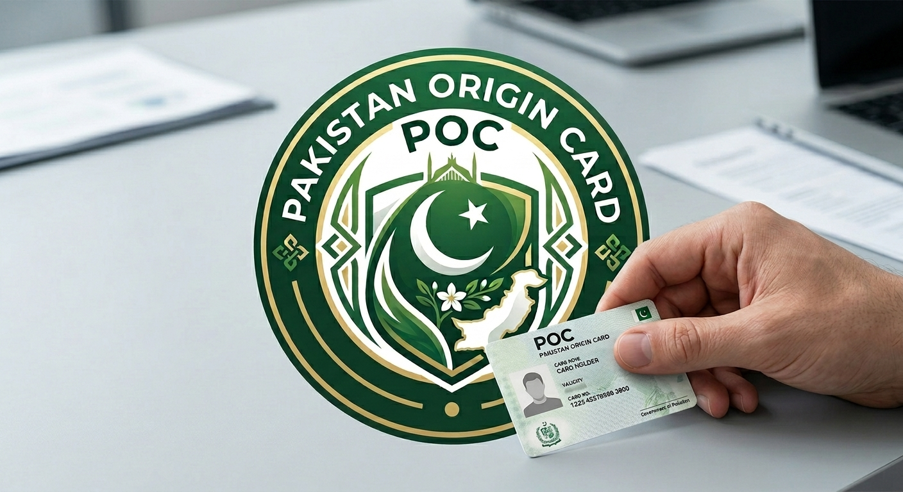

POC Card Fee 2026: $150–$300 — Pakistan Origin Card Guide

The Pakistan Origin Card (POC) is issued to foreign nationals of Pakistani descent — commonly people who have renounced Pakistani citizenship to take up citizenship elsewhere, or the children and grandchildren of former Pakistani citizens. Unlike NICOP, the POC fee is charged in a single USD rate worldwide, regardless of which country you apply from.
POC Fee Structure 2026 (NADRA Official)
| Service | Normal (31 days) | Urgent (23 days) | Executive (9 days) |
|---|---|---|---|
| New POC | $150 | $200 | $250 |
| POC Modification | $200 | $250 | $300 |
| POC Duplicate | $200 | $250 | $300 |
| POC Renewal | $150 | $200 | $250 |
POC Cancellation Fees
| Reason | Fee | Processing |
|---|---|---|
| Cancellation due to death | $25 | 2 days (Executive) |
| Cancellation due to divorce | $25 | 2 days (Executive) |
| Cancellation due to nationality surrender | $15 | 2 days (Executive) |
POC vs. NICOP — What's the Difference?
NICOP is issued to dual nationals who still legally hold Pakistani citizenship alongside a foreign nationality. POC is issued to foreign nationals who have renounced or never held Pakistani citizenship, but who have Pakistani ancestry — typically a parent or grandparent who was a Pakistani citizen. A POC does not grant Pakistani citizenship or a Pakistani passport; it mainly provides visa-free entry to Pakistan and certain documented rights, similar in spirit to an Overseas Citizen card used by some other countries.
Who Needs a POC Card?
A POC is typically relevant for three groups: people who were born Pakistani but formally surrendered their Pakistani nationality on acquiring another country's citizenship; the children of such individuals who were never themselves Pakistani citizens; and grandchildren of Pakistani-origin nationals who want documented proof of ancestry and visa-free travel rights to Pakistan. If you still hold Pakistani citizenship alongside a foreign one, you need a NICOP instead — not a POC.
POC Card Validity
A Smart POC is generally issued with a multi-year validity period, after which it must be renewed at the Renewal fee tier shown in the table above. Always check the expiry date printed on your card, since validity periods have been adjusted by NADRA over time.
Documents You'll Typically Need
- Valid foreign passport
- Proof of Pakistani origin — your own former CNIC/NICOP, or a parent's/grandparent's CNIC, NICOP, or Pakistani passport
- Recent passport-size photograph per NADRA specifications
- Proof of foreign citizenship/renunciation documents, where applicable
How to Apply
POC applications can be submitted in three ways: online through the Pak-ID portal (id.nadra.gov.pk), in person at a Pakistani embassy or consulate abroad, or at a NADRA Registration Center (NRC) if you happen to be in Pakistan at the time of applying. As with NICOP, some missions add their own service or courier charge on top of NADRA's base fee, so it's worth confirming the total with your nearest mission or NRC before your appointment.
Payment Methods
POC fees can be paid through several methods depending on where and how you apply:
- EasyPaisa
- JazzCash
- Raast bank transfer (direct bank account payment)
- Online debit or credit card (via the Pak-ID portal)
Frequently Asked Questions
What is a POC card?
A Pakistan Origin Card (POC) is issued by NADRA to foreign nationals who were previously Pakistani citizens, or who are the children/grandchildren of Pakistani citizens, allowing them certain rights similar to a NICOP holder without requiring Pakistani citizenship.
What is the difference between POC and NICOP?
NICOP is issued to dual nationals who still legally hold Pakistani citizenship alongside a foreign one. POC is issued to foreign nationals who have renounced or never held Pakistani citizenship but have Pakistani ancestry, and it does not grant citizenship rights.
Is the POC fee the same worldwide?
Yes — unlike NICOP, which is split into Zone A and Zone B pricing, NADRA's official POC fee structure is a single USD-based rate applied worldwide, regardless of which country you apply from.
Can a POC be converted to NICOP later?
A POC holder would need to apply for Pakistani citizenship through the standard legal process before becoming eligible for a NICOP; the two cards are not directly interchangeable.
What happens if my POC application has different personal particulars than my old Pakistani record?
Applications with different particulars (such as a changed name or date of birth) are charged a separate, higher verification fee and may require additional supporting documents.
Related Guides
- NICOP Fee 2026 for Overseas Pakistanis
- Smart Card Fee 2026 (Inside Pakistan)
- Pakistan Passport Fee 2026
- Birth Certificate Fee 2026
Fees mentioned in this guide reflect NADRA's officially published fee structure as of 2026. NADRA fees are subject to change — always verify the current amount on the official NADRA Fee Structure page (nadra.gov.pk) or with your nearest Pakistani mission before submitting payment.